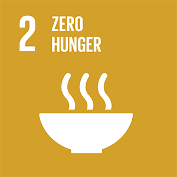
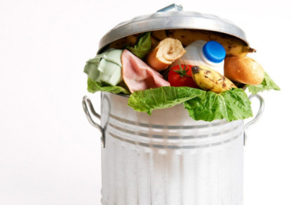
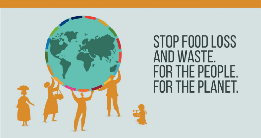
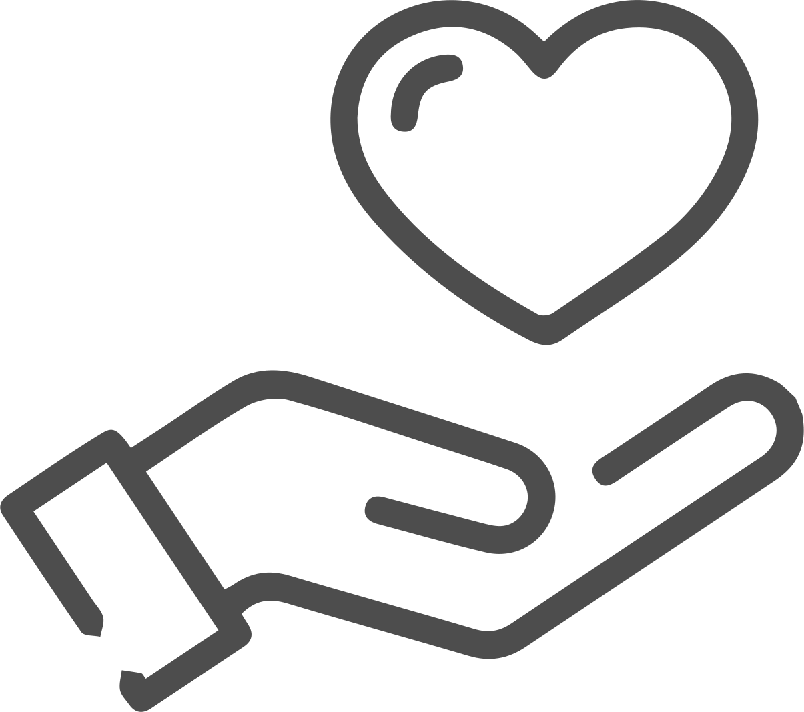

The problem.
We wish to contribute to solving of the second UN Sustainable Development Goal, zero hunger and will be contributing by trying to reduce food wastage.

Food is a finite resource many Norwegians take for granted. Norwegians are amongst the most wasteful of people and hence contribute to the food shortage starving many around the globe.

”
"Norwegians waste about ~385 000 metric ton on a yearly basis and that the general population is to be blamed for 58% of this waste."
- Matvett.no
In conclusion, on average a Norwegian citizen wastes 42,5 kg of edible food every year. This 58% wastage could feed half a million people and reduce world hunger.
Our solution.
Our solution aims to reduce the wastage of food by introducing an accessible and easy-to-use app.

There are many reasons to wastage of food but seeing as 20% of it comes from dinner leftovers, we believe one of the major factors are laziness and lack of accessible information. Therefore, have we prioritized the ease of use of the app and the amount of time it takes to use.
The main functionality of the app is to inform how leftovers from meals inputted by the user can be used, be it used in another dish or donated. The secondary function of the app is to be an accessible and correct informed library of information regarding food. The information on the app is as an example how long cooked food and leftovers can safely be stored and what the optimal storage condition is. The app will also contain information about how long after a product has gone past its “best before” date it is safe to consume and dispelling of general misconceptions such as food intolerance being the same as food allergy while they’re not.
The app can also be personalized by inputting age, weight, height and fitness. Personalization is not necessary to use the app nor will it be advertised, so as that the app does not become intrusive towards the user. If personalized the app can then help plan healthy meals and by also inputting your meals throughout the week, help find vitamins and nutrients you are lacking in your diet.

As earlier stated, the app helps with deciding what to do with leftovers, one option being donation. By deciding to donate, the donation will be uploaded to our network so that other users of the app can see it and decide whether they wish to partake in the donation.